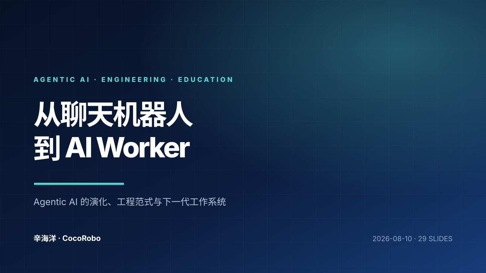
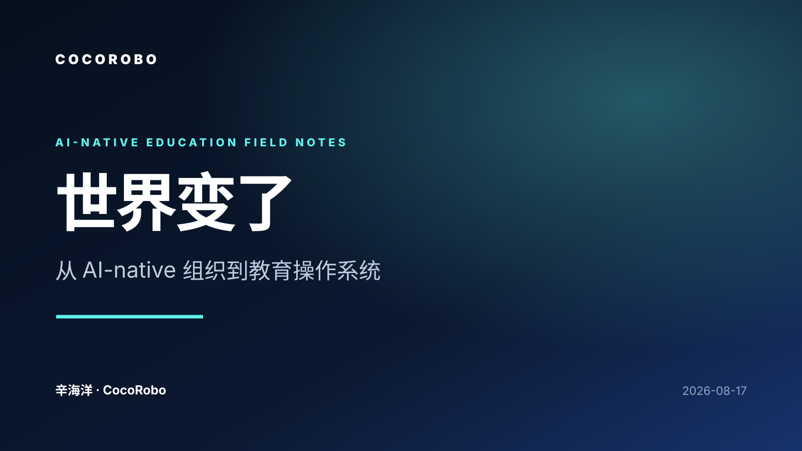

从聊天机器人到 AI Worker
梳理 Agentic AI 从行动循环到工作系统的演化，并提出 CocoRobo 面向学校的教学编排、证据闭环与制度化实施战略。
打开在线演示关于 Agentic AI、AI-native 教育系统、产品战略与组织转型的公开演示与内部思考。

梳理 Agentic AI 从行动循环到工作系统的演化，并提出 CocoRobo 面向学校的教学编排、证据闭环与制度化实施战略。
打开在线演示
讨论一般数字产出的商品化、价值向真实问题与可信证据迁移，以及 CocoRobo 从单点 SaaS 走向 AI-native 工作系统的组织选择。
打开在线演示
介绍如何把课件升级为互动课堂，并以智能体、H5、课堂互动和智能总结连接备课、课中与课后，让老师始终掌握教学主导权。
打开在线演示